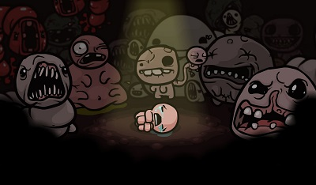
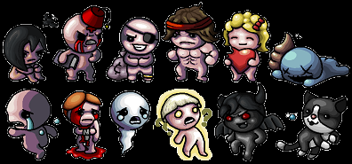

How to play
The Binding of Isaac is a two-dimensional Action-adventure game where the player controls Isaac or 10 of the unlockable characters as he traverses through the dungeons located underneath his mother's basement. On each floor of the basement below, the player must fight off monsters before he can go into other rooms. Along the way, the player can collect currency to buy items from shops, keys to gain entry into special treasure rooms (as well as special golden chests, libraries that contain book items, and shops), and new weapons and power-ups to increase his chance of surviving. Each floor of the dungeon ends in a boss room, where the player must defeat the boss before being able to go down to the next floor.
Players
Before you start playing The Binding of Isaac: Rebirth, the game wants you to decide what character you would like to play. There are 11 total characters, however, you start off with just Isaac when you first begin the game. There's Isaac, the main character, Magdaleine, Cain, Judas, Blue Baby, Eve, Samson, Azazel, Lazarus, Eden, and The Lost. Playable characters are the main characters and literally based on Biblical people. NPCs, fully known as non-playable characters, are characters that are not playable. Some take a role as vendors from in-game while few others only appear in cutscenes.
Items
Items are an integral part of gameplay from The Binding Of Isaac. They modify a character's stats, grant or modify abilities, grant or modify tear effects, and many other things. Items in general are classified into a number of distinct types and groups. Some items are passive, which add an effect permanently to Isaac, while others only activate when used. Certain items can be harmful to Isaac and some can be beneficial.
Hardcore
The Hardcore mode is a game mode much more harder than the normal mode. It makes the gameplay much more difficult. In other words, it is much more difficult to find coins and to find good items that help the player.